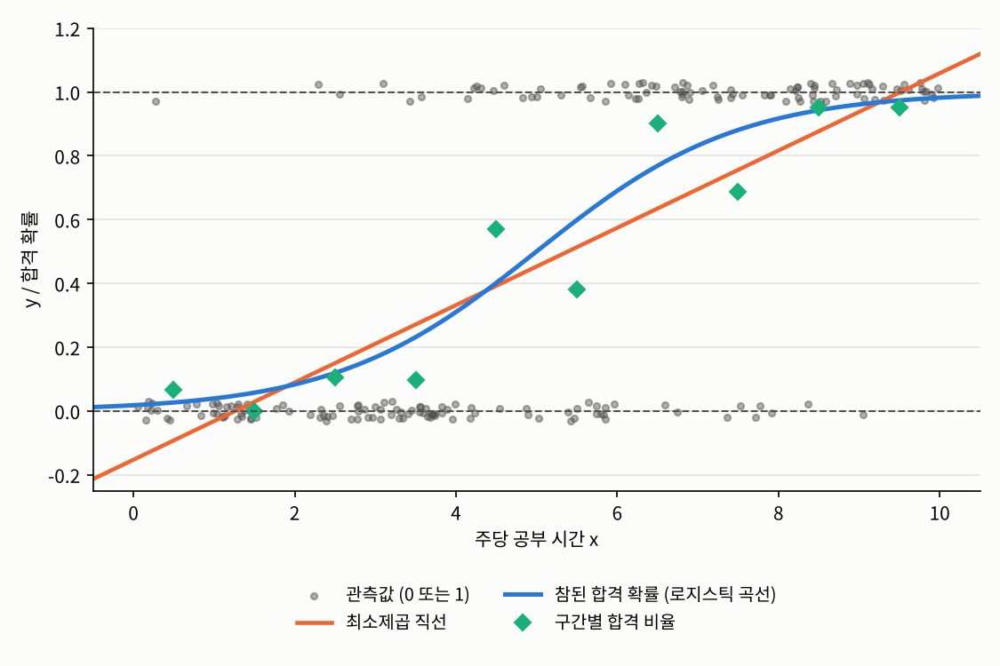

4.1 로지스틱 회귀 모형
4장 로지스틱 회귀 · 확률 대신 로그오즈를 선형으로
들어가며
지난 글에서 본 것처럼, 반응변수 \(Y\)가 \(0\) 또는 \(1\)이면 조건부 기대값 \(\mathbb{E}[Y \mid X = x]\)는 곧 조건부 확률 \(\mathbb{P}(Y = 1 \mid X = x)\)입니다. 그러니 3.1절의 관점에서 보면, 이번에도 회귀함수를 모형화한다는 목표는 그대로입니다. 달라지는 것은 회귀함수가 확률이라는 점, 그래서 \(0\)과 \(1\) 사이에 갇혀 있어야 한다는 점입니다.
이번 글에서는 두 가지 질문을 다룹니다. 먼저 3장의 선형 모형을 \(0\)과 \(1\)에 그대로 적용하면 무엇이 잘못되는지 확인하고, 그 문제를 해결하는 로지스틱 회귀 모형을 정의합니다. 다음으로 그렇게 정의한 모형의 계수 \(\beta_j\)를 어떻게 읽어야 하는지 살펴봅니다.
문제 1: 0과 1에 직선을 맞추면
문제 상황
학생 200명의 주당 공부 시간 \(x\)와 시험 합격 여부 \(y\)(합격이면 \(1\), 불합격이면 \(0\))를 조사했다고 하겠습니다. 데이터는 합격 확률이 \(\pi(x) = 1/(1 + e^{-(-4 + 0.8x)})\)인 모형에서 뽑았습니다. 3장에서 배운 대로 \(y\)를 \(x\)에 대해 최소제곱으로 적합해 보겠습니다. 이렇게 \(0\)과 \(1\)에 직선을 그대로 맞춘 모형을 선형 확률 모형(linear probability model)이라고 부릅니다.
import numpy as np
np.random.seed(1557)
n = 200
x = np.random.uniform(0, 10, size=n) # 주당 공부 시간
pi = 1 / (1 + np.exp(-(-4 + 0.8 * x))) # 참된 합격 확률
y = np.random.binomial(1, pi) # 합격이면 1, 불합격이면 0
X = np.column_stack([np.ones(n), x])
b = np.linalg.solve(X.T @ X, X.T @ y) # 0/1을 그대로 최소제곱으로 적합
fitted = X @ b
print(f"최소제곱 직선: {b[0]:.3f} + {b[1]:.3f} x")
print(f"적합값의 범위: {fitted.min():.3f} ~ {fitted.max():.3f}")
print(f"0보다 작거나 1보다 큰 적합값: {np.sum((fitted < 0) | (fitted > 1))}개 / {n}개")
for lo, hi in [(0, 2), (4, 6), (8, 10)]:
m = (x >= lo) & (x < hi)
print(f"{lo} ≤ x < {hi}: 합격 비율 = {y[m].mean():.3f}, Y의 분산 = {y[m].var():.3f}")최소제곱 직선: -0.153 + 0.121 x
적합값의 범위: -0.146 ~ 1.056
0보다 작거나 1보다 큰 적합값: 33개 / 200개
0 ≤ x < 2: 합격 비율 = 0.027, Y의 분산 = 0.026
4 ≤ x < 6: 합격 비율 = 0.457, Y의 분산 = 0.248
8 ≤ x < 10: 합격 비율 = 0.952, Y의 분산 = 0.045
두 가지 문제가 보입니다.
- 확률이 범위를 벗어납니다. 적합값 200개 가운데 33개가 \(0\)보다 작거나 \(1\)보다 큽니다. 공부를 거의 안 한 학생의 합격 확률이 \(-0.146\)이라는 것은 말이 되지 않습니다. 직선은 양쪽으로 끝없이 뻗어 나가므로, 데이터 범위를 조금만 벗어나도 이런 일은 반드시 일어납니다.
- 분산이 일정하지 않습니다. 합격 비율이 \(0.5\) 근처인 구간에서는 \(Y\)의 분산이 \(0.248\)인데, 합격 비율이 \(0\)이나 \(1\)에 가까운 구간에서는 \(0.026\), \(0.045\)로 훨씬 작습니다. \(Y \in \{0, 1\}\)이면 \(\mathrm{Var}(Y \mid X = x) = \pi(x)\{1 - \pi(x)\}\)이므로 이는 우연이 아니라 필연입니다. 3장의 가우스-마르코프 정리가 기대고 있던 등분산 가정이 처음부터 성립하지 않는 것입니다.
게다가 그림을 보면 구간별 합격 비율은 직선보다 S자 곡선을 더 잘 따라갑니다. 공부 시간이 아주 적거나 아주 많은 쪽에서는 한 시간을 더 공부해도 합격 확률이 별로 바뀌지 않고, 중간쯤에서 크게 바뀝니다. 이런 모양을 직선 하나로 담을 수는 없습니다.
접근 아이디어
선형 예측자 \(\eta = \beta_0 + \beta_1 x\)는 실수 전체에서 값을 가집니다. 반면 확률 \(\pi\)는 \((0, 1)\)에 갇혀 있습니다. 문제는 이 둘을 \(\pi = \eta\)로 곧바로 같게 놓았다는 데 있습니다. 그렇다면 \((0, 1)\)을 실수 전체로 늘려 주는 변환 \(g\)를 하나 찾아서 \(g(\pi) = \eta\)로 놓으면 어떨까요? 그러면 \(\eta\)가 어떤 값이든 \(\pi = g^{-1}(\eta)\)는 언제나 \((0, 1)\) 안에 있습니다.
그런 변환은 두 단계로 만들 수 있습니다. 먼저 \(\pi\)를 \(\pi / (1 - \pi)\)로 바꾸면 \((0, 1)\)이 \((0, \infty)\)로 늘어나고, 여기에 로그를 씌우면 \((0, \infty)\)가 \((-\infty, \infty)\)로 늘어납니다. 앞의 것이 도박이나 역학에서 흔히 쓰는 오즈이고, 뒤의 것이 로그오즈입니다. 이제 이 아이디어를 정확하게 적어 보겠습니다.
필요한 개념들
오즈가 \(1\)이면 성공과 실패의 가능성이 같고(\(\pi = 1/2\)), 오즈가 \(3\)이면 성공할 가능성이 실패할 가능성의 세 배입니다(\(\pi = 3/4\)). 로짓은 \(\pi = 1/2\)일 때 \(0\)이고, \(\pi\)가 \(1\)에 다가가면 \(+\infty\)로, \(0\)에 다가가면 \(-\infty\)로 갑니다. 로지스틱 함수는 이 과정을 거꾸로 되돌리는 S자 곡선입니다. 다음 성질들은 이 장 전체에서 계속 씁니다.
3번 성질은 로지스틱 곡선의 기울기가 \(\pi(1 - \pi)\)라는 뜻입니다. 이 값은 \(\pi = 1/2\)에서 최댓값 \(1/4\)를 가지고 \(\pi\)가 \(0\)이나 \(1\)에 가까울수록 \(0\)에 가까워집니다. 그림에서 본 “중간에서 가파르고 양 끝에서 평평한” 모양이 바로 이것입니다. 또 이 \(\pi(1 - \pi)\)는 \(0\) 또는 \(1\)인 변수의 분산과 같은 식이라는 점도 기억해 두면 좋습니다. 4.2절에서 이 우연처럼 보이는 일치가 계산을 크게 단순하게 만들어 줍니다.
이제 모형을 정의하겠습니다. 3.1절에서처럼 관측값은 반응변수와 설명변수의 쌍 \((Y_i, X_i)\)이고, 설명변수 \(X_i = (X_{i,1}, \ldots, X_{i,d-1})^\top\)는 \(\mathbb{R}^{d-1}\)에 값을 가지는 확률벡터입니다. 반응변수 \(Y_i\)는 \(0\) 또는 \(1\)인 경우뿐 아니라, 같은 조건에서 \(m_i\)번 시행했을 때의 성공 횟수인 경우까지 한꺼번에 다룹니다.
여기서 모형화하는 대상이 무엇인지 분명히 해 두어야 합니다. 우리가 정하려는 것은 \(Y_i\) 자체의 분포가 아니라, \(X_i = x_i\)라는 결과를 보았을 때 \(Y_i\)가 어떻게 분포하는가입니다. 공부 시간이 \(3\)시간인 학생과 \(8\)시간인 학생은 합격 확률이 다르므로, 합격 여부의 분포는 공부 시간을 알고 난 뒤에야 하나로 정해집니다. 이것을 \[Y_i \mid X_i = x_i \ \sim\ B(m_i, \pi_i)\] 로 쓰고, “설명변수의 값이 \(x_i\)로 관측되었다는 것을 알고 나면, \(Y_i\)는 \(B(m_i, \pi_i)\)를 따르는 것처럼 행동한다”고 읽습니다. 3.1절에서 말했듯이 \(Y_i \mid X_i\)라는 확률변수가 따로 있는 것이 아니라, 값 \(x_i\)마다 \(Y_i\)의 분포가 하나씩 정해진다는 뜻입니다. 이에 비해 \(X_i\)를 모르는 상태에서 본 \(Y_i\)의 분포는 여러 \(x_i\)에서의 분포를 \(X_i\)의 분포로 섞은 것이라서, 일반적으로 이항분포가 아닙니다.
\(X_i\)가 이산형이면 이 분포는 초등적인 조건부 확률 \(\mathbb{P}(Y_i = y \mid X_i = x_i) = \mathbb{P}(Y_i = y,\ X_i = x_i)/\mathbb{P}(X_i = x_i)\) 그대로입니다. \(X_i\)가 연속형이면 \(\mathbb{P}(X_i = x_i) = 0\)이라서 이 식을 쓸 수 없고, 정확하게는 \(x_i\)마다 확률분포를 하나씩 대응시키는 확률핵(probability kernel)으로 정의합니다. 이 정의는 수리통계학에서 다루고, 여기서는 위의 직관만으로 충분합니다.
3장의 계획행렬 \[X = \begin{pmatrix} 1 & x_{1,1} & \cdots & x_{1,d-1} \\ \vdots & \vdots & \ddots & \vdots \\ 1 & x_{n,1} & \cdots & x_{n,d-1} \end{pmatrix} \in \mathbb{R}^{n \times d}\] 를 관측된 설명변수 값 \(x_1, \ldots, x_n\)으로 만들면 선형 예측자를 모은 벡터는 \(\eta = X\beta\)이고, 이 점은 3장과 똑같습니다. 이항분포의 성질에서 바로
\[\mathbb{E}(Y_i \mid X_i = x_i) = m_i\pi_i =: \mu_i, \qquad \mathrm{Var}(Y_i \mid X_i = x_i) = m_i\pi_i(1 - \pi_i)\]
입니다. 첫째 식은 3.1절의 회귀함수 \(\mathbb{E}(Y_i \mid X_i = x_i)\)를 \(m_i\sigma(\eta_i)\)로 모형화했다는 뜻입니다. 조건부 평균이 정해지면 조건부 분산도 함께 정해진다는 것, 그래서 분산이 관측값마다 다르다는 것이 모형 안에 처음부터 들어 있습니다.
이 정의를 3장의 선형 모형과 나란히 놓아 보면, 선형 모형도 같은 세 부분으로 쓸 수 있습니다. 확률 성분은 \(Y_i \mid X_i = x_i \sim N(\mu_i, \sigma^2)\), 체계적 성분은 같은 \(\eta_i\), 연결 함수는 항등함수 \(\mu_i = \eta_i\)입니다. 이렇게 확률 성분, 체계적 성분, 연결 함수의 세 부분으로 모형을 정하는 틀을 일반화 선형 모형(generalized linear model, GLM)이라고 합니다. 로지스틱 회귀는 확률 성분을 이항분포로, 연결 함수를 로짓으로 고른 일반화 선형 모형입니다.
그런데 \((0, 1)\)을 실수 전체로 보내는 함수는 로짓 말고도 많습니다. 예를 들어 표준정규분포의 분포함수의 역함수 \(\Phi^{-1}\)을 쓰면 프로빗 모형(probit model)이 됩니다. 그중에서 로짓을 고르는 데에는 수학적인 이유가 있습니다.
이 식에서 \(y\)와 곱해지는 양 \(\eta\)를 이항분포의 자연모수(natural parameter)라고 합니다. 로짓 연결은 바로 이 자연모수를 선형 예측자와 같게 놓는 연결이고, 이런 연결을 정준 연결(canonical link)이라고 합니다. 정준 연결을 쓰면 로그우도에서 \(\beta\)가 \(y_i\eta_i\)라는 단순한 꼴로만 \(y_i\)와 만나기 때문에, 4.2절에서 볼 점수와 정보 행렬이 아주 깔끔해집니다.
해결
로지스틱 회귀 모형은 앞의 두 문제를 모두 해결합니다.
- 확률은 항상 범위 안에 있습니다. 선형 예측자 \(\eta_i\)가 어떤 값이든 정리 4.1.2에 의해 \(\pi_i = \sigma(\eta_i) \in (0, 1)\)입니다. 그림의 파란 곡선처럼, 공부 시간이 아무리 적거나 많아도 합격 확률은 \(0\)과 \(1\) 사이에 머물고 양 끝으로 갈수록 평평해집니다.
- 분산이 다른 것은 더 이상 문제가 아닙니다. 선형 확률 모형에서는 분산이 일정하지 않은 것이 모형의 가정을 어기는 일이었지만, 로지스틱 회귀 모형에서는 \(\mathrm{Var}(Y_i \mid X_i = x_i) = m_i\pi_i(1 - \pi_i)\)가 모형의 일부입니다. 4.2절의 추정 방법은 이 분산 구조를 처음부터 반영합니다.
모형이 생겼으니 그림의 데이터에서 실제로 \(\beta_0, \beta_1\)을 추정해야 하는데, 최소제곱 추정량처럼 식 하나로 쓸 수 있는 답은 없습니다. 이 문제는 4.2절에서 다루고, 여기서는 먼저 계수가 무엇을 뜻하는지부터 알아보겠습니다.
문제 2: 계수를 어떻게 읽을까
문제 상황
3장의 선형 모형에서는 계수의 뜻이 분명했습니다. 다른 설명변수를 고정하고 \(x_j\)를 \(1\) 늘리면 \(Y\)의 조건부 기대값이 \(\beta_j\)만큼 늘어납니다. 그런데 앞의 예에서 참된 모형은 \(\mathrm{logit}\,\pi(x) = -4 + 0.8x\)였습니다. 공부 시간이 한 시간 늘면 합격 확률이 \(0.8\)만큼 늘어날까요? 확률은 \(1\)을 넘을 수 없으니 그럴 리 없습니다. 그렇다면 \(\beta_1 = 0.8\)은 무엇을 말하는 걸까요?
접근 아이디어
모형에서 선형인 것은 확률이 아니라 로그오즈입니다. 그러니 “\(x_j\)를 \(1\) 늘리면 로그오즈가 \(\beta_j\)만큼 늘어난다”는 것은 선형 모형과 똑같이 성립합니다. 로그오즈가 \(\beta_j\) 늘어난다는 것은 오즈가 \(e^{\beta_j}\)배가 된다는 뜻입니다. 로그의 덧셈이 원래 값의 곱셈이기 때문입니다. 이것을 정확히 하려면 두 오즈의 비를 정의해야 합니다.
필요한 개념들
오즈비가 \(1\)이면 두 오즈가 같고, 오즈비가 \(1\)보다 크면 \(\pi'\) 쪽의 성공 가능성이 더 큽니다. 확률의 비 \(\pi'/\pi\)를 상대위험(relative risk)이라고 하는데, 오즈비와는 다른 양이라는 점에 주의해야 합니다.
\(x_j\)가 두 범주를 나타내는 지시변수라면, \(e^{\beta_j}\)는 기준 범주에 대한 그 범주의 오즈비입니다. 예를 들어 과제를 모두 냈으면 \(1\)인 지시변수의 계수가 \(\beta_j = 0.7\)이면, 공부 시간이 같은 학생끼리 비교할 때 과제를 모두 낸 학생의 합격 오즈가 \(e^{0.7} \approx 2\)배라는 뜻입니다. 이것은 “다른 설명변수를 고정했을 때”의 조건부 연관성에 대한 진술이고, 과제를 내게 하면 합격 오즈가 두 배가 된다는 인과에 대한 진술은 아니라는 점에 주의해야 합니다. 인과적으로 해석하려면 무작위 배정 같은 추가적인 근거가 필요합니다.
오즈비는 출발점과 상관없이 일정하지만, 확률의 변화는 그렇지 않습니다.
즉 \(x_j\)를 조금 늘렸을 때 확률이 얼마나 바뀌는지는 \(\beta_j\)만으로 정해지지 않고, 지금 확률이 얼마인지에 따라 달라집니다. 확률이 \(1/2\) 근처일 때 가장 크게 바뀌고, \(0\)이나 \(1\) 근처에서는 거의 바뀌지 않습니다. 그래서 “계수를 \(4\)로 나누면 확률 변화의 상한”이라는 어림셈이 자주 쓰입니다.
해결
참된 계수 \(\beta_0 = -4\), \(\beta_1 = 0.8\)에서 공부 시간을 한 시간 늘렸을 때 확률과 오즈가 어떻게 바뀌는지, 출발점을 세 군데로 바꿔 가며 계산해 보겠습니다.
import numpy as np
beta0, beta1 = -4, 0.8
def prob(x):
return 1 / (1 + np.exp(-(beta0 + beta1 * x)))
print(f"한 시간당 오즈비 exp(beta1) = {np.exp(beta1):.3f}")
for x0 in [1, 5, 9]:
p0, p1 = prob(x0), prob(x0 + 1)
odds0, odds1 = p0 / (1 - p0), p1 / (1 - p1)
print(f"x: {x0} → {x0 + 1} 확률 {p0:.3f} → {p1:.3f} (차이 {p1 - p0:+.3f}, 비 {p1 / p0:.2f}),"
f" 오즈 {odds0:.3f} → {odds1:.3f} (비 {odds1 / odds0:.3f})")한 시간당 오즈비 exp(beta1) = 2.226
x: 1 → 2 확률 0.039 → 0.083 (차이 +0.044, 비 2.12), 오즈 0.041 → 0.091 (비 2.226)
x: 5 → 6 확률 0.500 → 0.690 (차이 +0.190, 비 1.38), 오즈 1.000 → 2.226 (비 2.226)
x: 9 → 10 확률 0.961 → 0.982 (차이 +0.021, 비 1.02), 오즈 24.533 → 54.598 (비 2.226)정리 4.1.6대로 오즈비는 어디서 출발하든 \(e^{0.8} \approx 2.226\)입니다. 반면 확률의 차이는 출발점이 \(0.5\)일 때 \(0.190\)으로 가장 크고(정리 4.1.7의 상한 \(0.8/4 = 0.2\)에 가깝습니다), 양 끝에서는 \(0.044\), \(0.021\)로 작습니다. 확률의 비, 곧 상대위험도 \(2.12\), \(1.38\), \(1.02\)로 제각각입니다. 그러니 “\(e^{\beta_1} = 2.226\)이므로 한 시간 더 공부하면 합격 확률이 \(2.2\)배가 된다”고 읽으면 틀립니다. \(2.226\)은 오즈의 비이지 확률의 비가 아닙니다.
다만 첫째 줄처럼 확률이 아주 작을 때는 \(1 - \pi \approx 1\)이라서 오즈가 확률과 거의 같고, 오즈비도 상대위험과 비슷해집니다(\(2.226\)과 \(2.12\)). 드문 질병을 다루는 역학 연구에서 오즈비를 상대위험처럼 읽는 것은 이 근사에 기댄 것이고, 사건이 흔하면 이 근사는 성립하지 않습니다.
계수를 읽을 때는 단위도 신경 써야 합니다. 정리 4.1.6에서 \(x_j\)가 \(\Delta\)만큼 바뀌면 오즈는 \(e^{\Delta\beta_j}\)배가 됩니다. 설명변수의 단위가 데이터의 범위에 비해 너무 크면, 예를 들어 길이를 밀리미터 단위로 재는 변수를 미터 단위로 바꾸면, “\(1\)단위 증가”에 해당하는 오즈비가 터무니없이 크거나 작아집니다. 이럴 때는 데이터 범위에 맞는 증분 \(\Delta\)를 골라 \(e^{\Delta\beta_j}\)를 보고하는 것이 좋습니다.
정리
이번 글에서 정의한 로지스틱 회귀 모형을 3장의 선형 모형과 나란히 놓으면 다음과 같습니다.
| 선형 모형 (3장) | 로지스틱 회귀 모형 | |
|---|---|---|
| 확률 성분 | \(Y_i \mid X_i = x_i \sim N(\mu_i, \sigma^2)\) | \(Y_i \mid X_i = x_i \sim B(m_i, \pi_i)\) |
| 체계적 성분 | \(\eta_i = \beta_0 + \beta_1x_{i,1} + \cdots + \beta_{d-1}x_{i,d-1}\) | 같음 |
| 연결 함수 | 항등함수 \(\mu_i = \eta_i\) | 로짓 \(\mathrm{logit}(\pi_i) = \eta_i\) |
| 조건부 분산 | \(\sigma^2\)로 일정 | \(m_i\pi_i(1 - \pi_i)\)로 평균에 따라 달라짐 |
| \(x_j\)가 \(1\) 늘면 | 평균이 \(\beta_j\) 늘어남 | 오즈가 \(e^{\beta_j}\)배가 됨 |
모형은 정했지만, 데이터에서 \(\beta\)를 어떻게 추정할지는 아직 남아 있습니다. 확률 성분이 정규분포가 아니므로 최소제곱법을 그대로 쓸 근거가 없고, 대신 1장의 최대우도 추정을 쓰게 됩니다. 4.2절에서는 로지스틱 회귀의 우도를 계산하고, 1장의 뉴턴-랩슨 방법이 여기서 어떤 모습이 되는지 살펴봅니다.
연결되는 개념
- \(\leftarrow\) 이전 개념: 4 로지스틱 회귀
- \(\rightarrow\) 다음 개념: 4.2 최대우도 추정과 IRLS